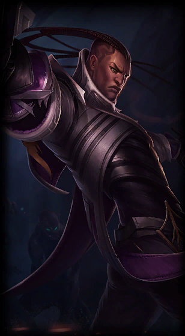
Lucian

Lucian
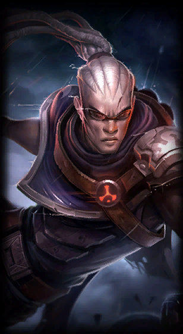
Hired Gun Lucian
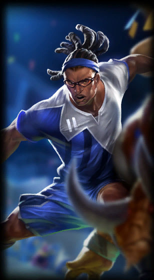
Striker Lucian
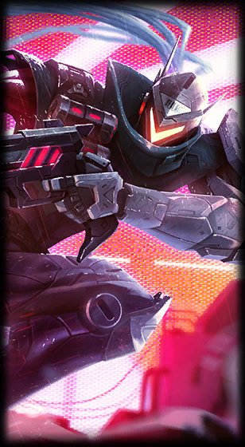
PROJECT Lucian
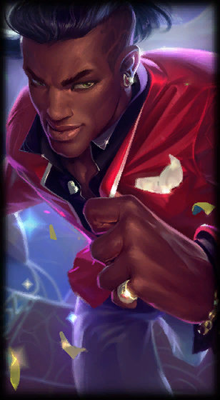
Heartseeker Lucian
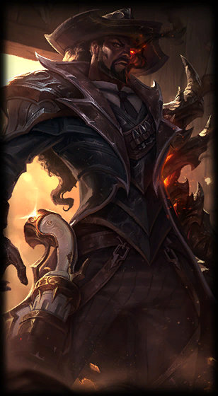
High Noon Lucian
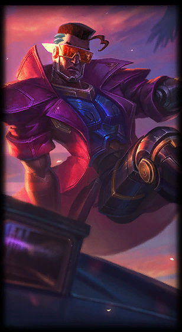
Demacia Vice Lucian
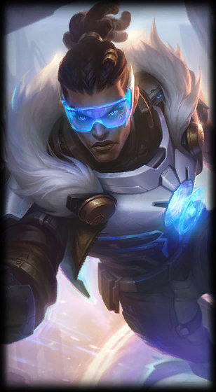
Pulsefire Lucian
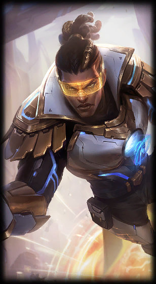
Prestige Pulsefire Lucian
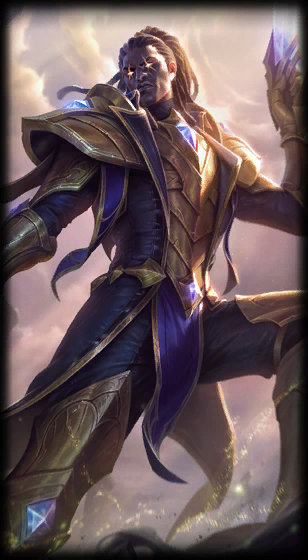
Victorious Lucian
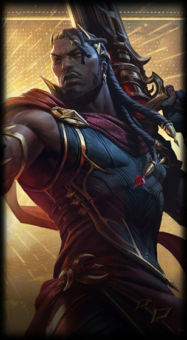
Arcana Lucian
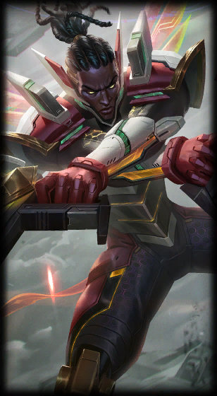
Strike Paladin Lucian
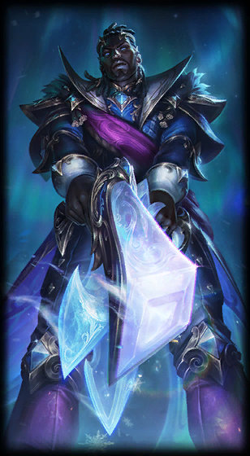
Winterblessed Lucian
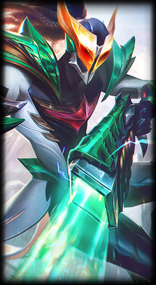
Masked Justice Lucian
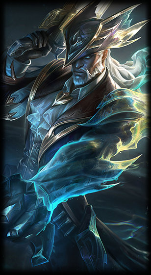
Sunken Shadows Lucian
Lucian, a Sentinel of Light, is a grim hunter of wraiths and specters, pursuing them relentlessly and annihilating them with his twin relic pistols. After the specter Thresh slew his wife, Lucian embarked on the path of vengeance—but even with her...